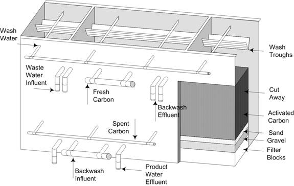
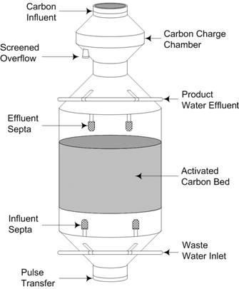
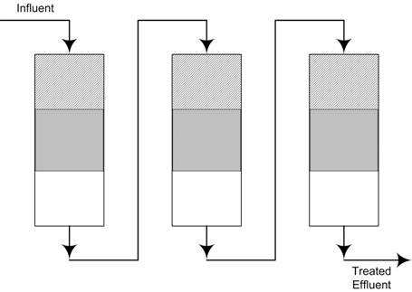

| |
|
|
| |
Fixed bed contactors and moving bed contactors can be
operated by means of gravity flow or pressure flow. Figure 6 is
an
example of a pressure flow contactor. The advantages of such
operation
are a higher hydraulic loading. A higher hydraulic loading can
significantly reduce the contactor cross-sectional area required to
obtain the
same performance. Pressure flow contactors can also handle
influent
streams with a higher concentration of suspended solids with less
frequent
backwashing. This is direct result of increased head to surmount
the
increasing head loss due to the higher concentration of suspended
solids.
The advantage to gravity flow is the lower energy cost associated with
the
process. Gravity flow is used only in downflow
contactors, and below is a diagram of a typical setup. |
|
| |
|
|
| |
 |
|
| |
|
|
| |
Figure 7. Typical
Downflow Gravity Contactor |
|
| |
|
|
| |
In the other set of activated carbon contactors is
the
category of moving bed contactors. This class of contactors is
always
operated in a pressurized upflow
nature. The class
can be broken up into: expanded beds, and pulsed bed contactors.
In
expanded bed contactors, the flow rate of the influent is maintained at
a
velocity in which the flow rate is high enough to cause the carbon bed
to
expand upwards slightly. This type of configuration can be used
for
influents that have both high and low concentrations of suspended
solids.
With an exceedingly high concentration, a downflow
contactor would result in excessive head loss due to the accumulation
of
suspended solids on the carbon bed when used as a secondary filtration
media. Upflow moving beds are limiting to
those applications where downstream contamination by suspended solids or
carbon residue would pose a problem. |
|
| |
The second type of moving bed contactor is called
a pulsed
bed. In this type of contactor, the carbon bed is occasionally
pulsed to
remove exhausted carbon out the bottom of the contactor and the same
amount of
exhausted carbon that was discharge is replaced with fresh or
reactivated carbon
through the top of the contactor. The flow between the carbon and
the
wastewater is countercurrent. The advantage to this contactor
configuration is optimal carbon utilization when properly executed, as
only
completely exhausted carbon is withdrawn from the contactor. As
result of
the continuous replacement of exhausted carbon the system when operated
correctly will never be completely exhausted. This inhibits
contamination
of the effluent stream. Another result of the continuous
replacement of
the exhausted carbon is that the set concentration of impurities in the
effluent is constant over an extended time period. In
fixed bed contactors, the set concentration of the impurities allowed
in the
effluent increases with respect to time in operation.
Below is a
diagram of a typical pulsed bed contactor. |
|
| |
|
|
| |
 |
|
| |
|
|
| |
Figure 8. Typical
Pressurized Pulsed Bed Carbon Contactor |
|
| |
|
|
| |
Single stage contactors are generally used at small-scale
plants where the contaminants removed result in a low carbon exhaustion
rate. At larger scale water treatment facilities, multiple
contactors are
often used where rapid carbon exhaustion rate occur. When using
multiple
contactors lower carbon usage rate can be achieved by arranging the
contactors
in either a series or parallel setup. As shown in Figure 8, the
influent
stream enters one contactor at a time and flows downward through the
carbon
bed. In this type of setup, the lead unit will be the first contactor to have its carbon bed go to exhaustion. When
this happens, the lead unit is taken offline and the next unit in line
becomes the lead unit. If the effluent requirements are very stringent
and all units are needed to achieve this requirement, a standby
contactor can be used while unit are taken offline for regeneration.
When there is a build up of suspended solids, backwashing will only need
to be done on the lead unit of the system. Lower carbon usage rates can
be achieved in a series setup, because units are taken offline for
regeneration only after the entire carbon bed is exhausted. In single
stage systems, the carbon will have to be replaced as so as the mass
transfer zone reaches the bottom of the contactor. |
|
| |
|
|
| |
 |
|
| |
|
|
| |
Figure 9. Series
Contactor System |
|
| |
|
|
| |
Opposed to the series setup, in a parallel arrangement (Figure 10), the
influent is flown through each individual contactor at the same time.
This means that each of the units receives the same quantity and quality
of the influent. The startup, however, is staggered so that only one
unit will approach exhaustion at a time. Like the series setup, a
standby unit can be used when another unit is taken offline for
regeneration. Unlike the series setup, the parallel arrangement cannot
obtain as high of carbon utilization because in the parallel arrangement
no unit is run to complete exhaustion. It does have a lower carbon
usage rate than a single stage contactor system. The applicability of
this setup is for system where there is a large total flow rate is
required, because the distribution of the flow amongst the individual
units will minimize the pressure drop. |
|
| |
|
|
| |
 |
|
| |
|
|
| |
Figure 10. Parallel
Contactor System |
|
| |
|
|
| |
Other configurations can be used to produce lower carbon usage rates.
These configurations are combinations of series and parallel setups.
These types of setups are arranged for specific applications using the
desired attributes from each of the different contactor setups. |
|
| |
|
|
| |
|
|
| |
|
|
| |
|
|